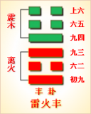
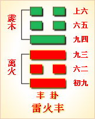

<!DOCTYPE html PUBLIC "-//W3C//DTD XHTML 1.0 Transitional//EN" "http://www.w3.org/TR/xhtml1/DTD/xhtml1-transitional.dtd">

<html xmlns="http://www.w3.org/1999/xhtml">
<head>
<meta content="text/html; charset=utf-8" http-equiv="Content-Type"/>
<title>周易第五十五卦：丰卦 雷火 震上离下原文解释翻译-周易-国学�?/title>
<meta content="周易,丰卦,雷火,震上离下" name="keywords"/>
<meta content="周易,丰卦,雷火,震上离下，周易第五十五卦：丰�?雷火 震上离下解释翻译�?（雷火丰）震上离�?《丰》：亨，王假之。勿忧，宜日中�?初九，遇其配主，虽旬无咎，往有尚�?六二，丰其蔀，日中见斗。往得疑疾，有孚发若，吉�?九三，丰其沛，日中见沫，�? name="description"/>
<link href="css.css" media="screen" rel="stylesheet" type="text/css"/>
</head>
<body>
<div class="gxlayout">
</div>
<div class="gxlayout">
<div class="ihead">
<div class="title"><a>周易</a></div>
<ul class="more fl">
<li>当前位置:<a>国学梦首�?/a> &gt; <a>国学经典</a> &gt; <a>经部</a> &gt; <a>四书五经</a> &gt; <a>周易</a> &gt;  周易第五十五卦：丰卦 雷火 震上离下原文解释翻译</li>
</ul>
</div>
<div class="gxbl fl">
<div class="latitle">

<h1>周易第五十五卦：丰卦 雷火 震上离下</h1>
<div class="lainfo"><span>作者：佚名</span> <span>全集�?a>周易</a></span> <span>来源：网�?/span> <span>[<a rel="nofollow" target="_blank">挑错/完善</a>]</span></div>
</div>
<div class="lacontent">
<div class="clearfix"></div>
<!--<!-- allowfullscreen="" frameborder="0" height="36" src="http://www.ximalaya.com/swf/sound/yellow.swf?id=1382846&amp;auto=true" width="260"></iframe>-->
<p style="text-align:center"></p>
<p style="text-align:center"><a>周易第五十五卦详�?/a></p>
<p style="text-align:center"><a>第五十五卦初九爻详解</a>　<a>第五十五卦六二爻详解</a>　<a>第五十五卦九三爻详解</a></p>
<p style="text-align:center"><a>第五十五卦九四爻详解</a>　<a>第五十五卦六五爻详解</a>　<a>第五十五卦上六爻详解</a></p>
<p><strong><a target="_blank">周易</a>第五十五�?�?雷火 震上离下</strong></p>
<p>丰：亨，王假之，勿忧，宜日中�?/p>
<p>彖曰：丰，大也。明以动，故丰。王假之，尚大也。勿忧宜日中，宜照天下也。日中则昃，月盈则食，天地盈虚，与时消息，而况人於人乎?况於鬼神�?</p>
<p>象曰：雷电皆至，�?君子以折狱致刑�?/p>
<p>初九：遇其配主，虽旬无咎，往有尚。象曰： 虽旬无咎，过旬灾也�?/p>
<p>六二：丰其蔀，日中见斗，往得疑疾，有孚发若，吉。象曰：有孚发若，信以发志也�?/p>
<p>九三：丰其沛，日中见昧，折其右肱，无咎。象曰：丰其沛，不可大事也。折其右肱，终不可用也�?/p>
<p>九四：丰其蔀，日中见斗，遇其夷主，吉。象曰：丰其蔀，位不当也。日中见斗，幽不明也。遇其夷主，�?行也�?/p>
<p>六五：来章，有庆誉，吉。象曰：六五之吉，有庆也�?/p>
<p>上六：丰其屋，蔀其家，窥其户，阒其无人，三岁不见，凶。象曰：丰其屋，天际翔也。窥其户，阒其无人，自藏也�?/p>
<p><strong><a href="55_丰卦.html" target="_blank">丰卦</a>卦象，雷火丰卦的象征意义</strong></p>
<p>丰卦，这个卦是异卦相叠，下卦为离，上卦为震。离为火，震为雷。雷雨会使五谷丰登，火又可以把丰收的粮食变为丰盛的饭菜，所以此卦命为“丰”�?/p>
<p>丰卦位于<a href="54_归妹�?html" target="_blank">归妹�?/a>之后，《序卦》这样解释道：“得其所归者必大，故受之以丰。丰者，大也。”归妹卦描述来归，有如众人来归则民聚国富，所以接着要谈代表盛大的丰卦�?/p>
<p>《象》中这样解释本卦：雷电皆至，�?君子以折狱致刑。这里指出：丰卦的卦象是�?�?�?�?雷上，离又代表闪电，震为雷，为雷电同时到来之表象，象征着盛大丰满;君子应该像雷电那样，审案用刑正大光明�?/p>
<p>丰卦属于上上卦。《象》中这样来断此卦：古镜昏暗好几年，一朝磨明似月圆，君子谋事逢此卦，近来运转喜自然�?/p>
<p>【丰卦卦象，雷火丰卦的象征意义释义�?/p>
<p>此卦卦名为丰。丰是一个象形字。甲骨文的丰字上面像一器物盛有玉形，下面是“豆�?古代盛器)。所以“豐”本是盛有贵重物品的礼器。这由“作”字可以得到证明。古文“豐”与“豐”是同一个字，《说文》中说：“豐，行礼之器也。”这个礼器是作什么用的呢?是一种盛酒用的器皿。古人举行秋祭时，要用“豐”盛酒，酒盛得很满，这就是后人“浅茶满酒”的来历。所以丰的引申义便是丰满、丰盛、硕大、丰富的意思。《序卦传》中说：“得其所归者必大，故受之以丰。丰者，大也。”这就是说民众都有好的归宿，合家团圆，幸福快乐，便会有大的收获而富裕起来，所以归妹卦的后面是丰卦�?/p>
<p>丰卦�?a target="_blank">�?/a>：丰卦的卦画为三个阴爻三个阳爻，阴阳爻之间非合即应，其排列顺序与<a href="56_旅卦.html" target="_blank">旅卦</a>的卦画正好相反，丰卦与旅卦互为覆卦�?/p>
<p>丰卦卦象：从卦象上分析，丰卦上卦为震为雷，下卦为离为电，惊雷四起，闪电不断，这就是丰卦的卦象。用雷电表现盛大的场面是不是还不够形�?是不够形象，不过也没有更合适的卦象了。因为这雷电要表达的场面不是一般的雷阵雨，而是日食。不知帝乙嫁妹之后是否真的出现过日食，但爻辞中所描述的日食却不是凭空能想像出来的�?/p>
<p>关键词：周易,丰卦,雷火,震上离下</p>
<div class="clearfix"></div>
<div class="title"><div class="thot">解释翻译</div><span>[挑错/完善]</span></div><p><a href="55_丰卦.html" target="_blank">丰卦</a>：君王到宗庙祭祝。不必担心，时间最好在中午�?/p>
<p>初九：途中受到女主人招待，跟她同居，没有灾祸。行旅得到了内助�?/p>
<p>六二：用草和草席铺盖房顶，中午见到北斗星。行旅中得了怪病;买到残废了的奴隶。吉利�?/p>
<p>九三：用草盖屋顶，中午出现了日蚀。折断了右臂。没有灾祸�?/p>
<p>九四：用草和草席铺盖房顶，中午见到北斗星。途中遇到了老房东。吉利�?/p>
<p>六五：获得美玉，大家庆贺称赞。吉利�?/p>
<p>上六：房子大而空，用草和草席盖房顶。从门缝往里看，寂静无人，看来多年无人居住。凶险�?/p>
<div class="title"><div class="thot">注释出处</div><span>[请记住我�?国学�?www.guoxuemeng.com]</span></div><p>①丰是本卦的标题。丰的意思是大，盛大。全卦的内容是讲行旅、商旅�?标题的“丰”字是卦中多见词�?/p>
<p>②亨：用作“享”，意思是祭把�?/p>
<p>�?假：用作“格”，意思是到达，至。之：指代祭耙的地方�?/p>
<p>(4)日中：中�?时分�?/p>
<p>⑤配主：女主人�?/p>
<p>(6)旬：意思是男女姘居结合�?/p>
<p>(7)尚：支持，帮助�?/p>
<p>(8)丰：扩大，增加，森：用作“菩”，意思是�?草或小席拼接起来�?/p>
<p>(9)斗：北斗星�?/p>
<p>(10)疑疾：多疑的病，怪病�?/p>
<p>(11)发：用作“废”，意思是天生残废�?/p>
<p>(12)沛：用作“芾”，意思是用草 盖房顶�?/p>
<p>(13)沫：用作“昧”，意思是暗淡无光，这里是说日蚀�?/p>
<p>(14)�?(gong)：手臂�?/p>
<p>(15)夷：常。夷主：常主�?/p>
<p>(16)来：获得。章：用�?“璋”，意思是美玉�?/p>
<p>(17)庆，庆贺，誉：称赞�?/p>
<p>(18)屋：指整座房子�?/p>
<p>(19)家：指屋内�?/p>
<p>(20)窥：意思是探看�?/p>
<p>(21)�?qu)：寂静�?/p>
<p>(22)觌：看见�?/p>
<div class="clearfix"></div>
<div class="contextdhall clearfix">
<ul>
<li>上一篇：<a href="54_归妹�?html">周易第五十四卦：归妹�?雷泽归妹 震上兑下</a> </li>
<li>下一篇：<a href="56_旅卦.html">周易第五十六卦：旅卦 火山�?离上艮下</a> </li>
<li>全   文�?a>周易</a></li>
</ul>
</div>
</div>
<div class="clearfix mt20"></div>
</div>
</div>
<div class="clearfix mt20"></div>
<div class="gxlayout">
</div>
<script>
var _hmt = _hmt || [];
(function() {
  var hm = document.createElement("script");
  hm.src = "https://hm.baidu.com/hm.js?872034ded637616c5cf8e173a446bb0e";
  var s = document.getElementsByTagName("script")[0];
  s.parentNode.insertBefore(hm, s);
})();
</script>
</body>
</html>
